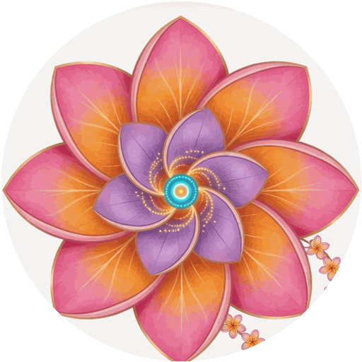

ʻOHANA BOT · TALK TO THE TOTEM
EN
中文
ʻOHANA
ONE BODY · SIX SOULS
Tap a face — it answers in its own voice.
SHAKA speaks in Shaka's exact cloned voice.
The Totem
six real agents of the ʻohana
🌙
spirit lane
⚡
Play the ceremony (7 beats, with voices)
Send